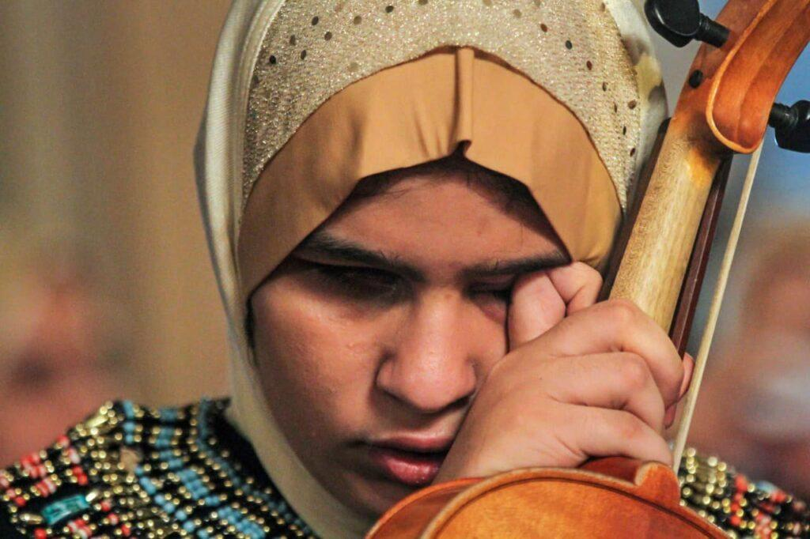

جهود الدولة لدعم ذوي الاحتياجات الخاصة
تسعى الدولة بشكل مستمر إلى دعم وتمكين ذوي الاحتياجات الخاصة من خلال العديد من المبادرات والمشروعات التي تهدف إلى تحسين جودة حياتهم ودمجهم في المجتمع.
- إطلاق مبادرات لدمج المكفوفين في الحياة اليومية عبر التكنولوجيا
- وزارة التضامن : تقديم 3500 عصا بيضاء لذوي الإعاقة البصرية في اليوم لعالمي للمكفوفين 15 اكتوبر
- الوزارة بتوفير لاب توب ناطق لعدد 2000 طالب وطالبة من كفيفى البصر في الجامعات الحكومية المصرية
- دعم مشاريع الابتكار مثل "عين الكفيف الذكية" لتسهيل حياتهم
